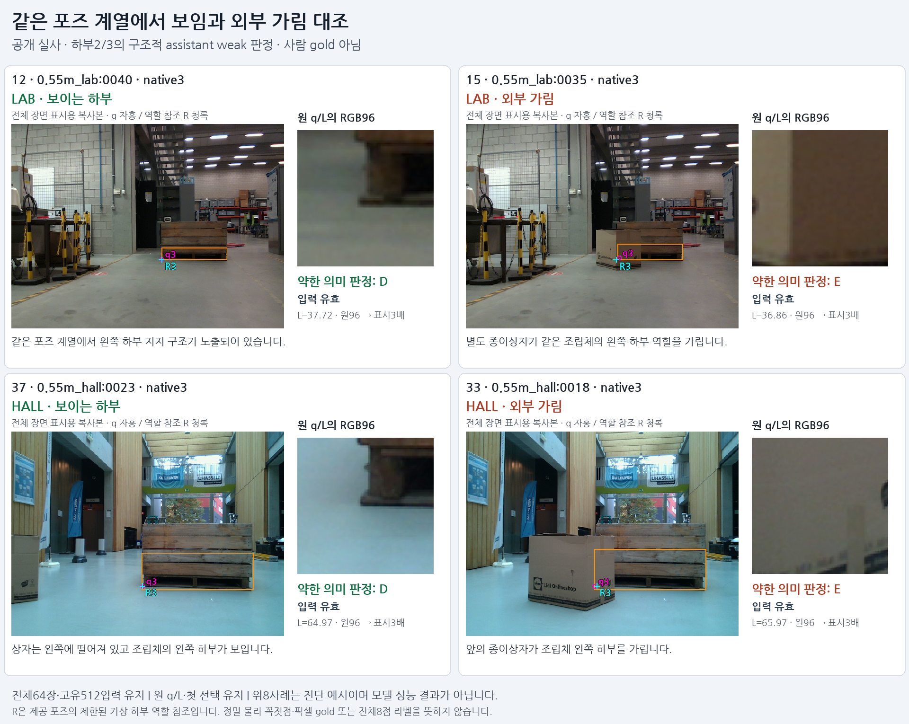
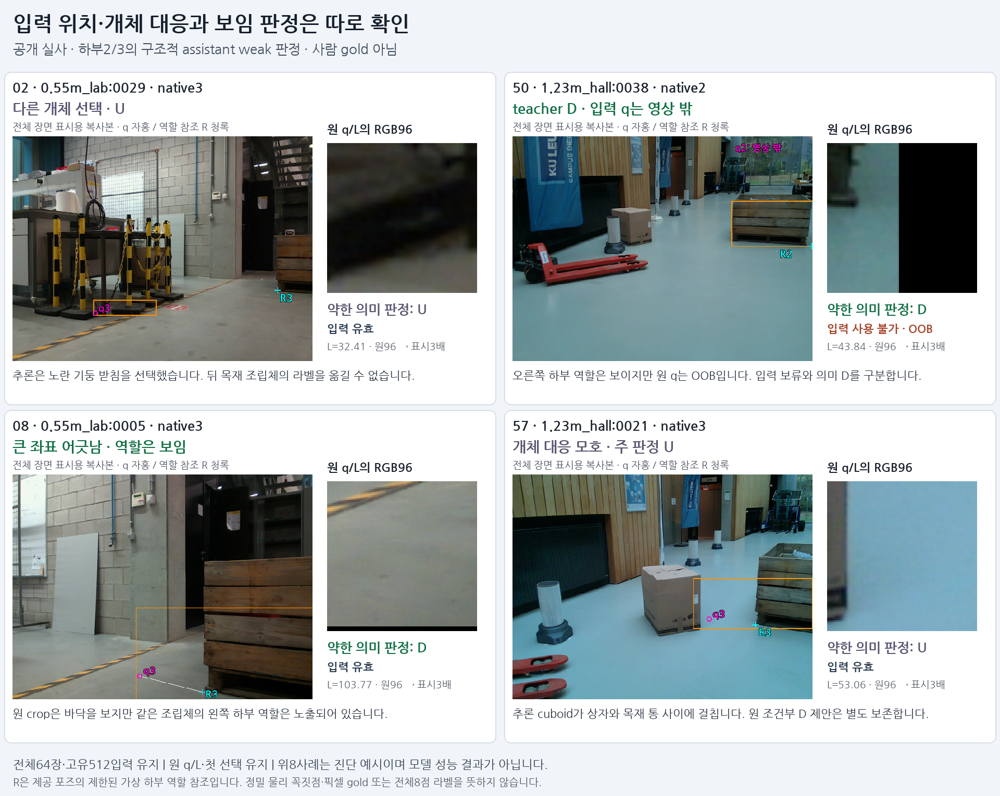

원64장과512입력·모든236검출 후보를 보존했습니다. 첫 선택과 q/L을 바꾸지 않았으며 원 입력은463개 유효·49개 영상 밖입니다. 제공 T/K는 직접 투영했고63장 하부 역할 검사 통과,1장은 미정으로 남겼습니다.
| 분할 | 보임 D | 외부 가림 E | 미정 U | 입력 유효 D/E |
|---|---|---|---|---|
| 전체 | 70 | 14 | 428 | 82 |
| LAB · 학습 분할 | 35 | 8 | 213 | 43 |
| HALL · 검증 분할 | 35 | 6 | 215 | 39 |
D 두 개는 대상 역할이 보이지만 초기 q가 영상 밖입니다. 의미 D를 E로 바꾸지 않고, 입력 보류를 별도로 보존했습니다. HALL의 애매한 개체 대응 한 점은 조건부 D 제안을 남기고 주 라벨 U로 판정했습니다.
하부2/3에 한정된 구조적 assistant weak 라벨입니다. 사람 gold·정밀 물리 꼭짓점·전체8점 정합 인증이 아닙니다. 상부/뒤384점은 U이며 U를 negative로 학습하지 않습니다. 현재 목표의 전체 키포인트 범위는 유지합니다.

LAB은 학습 분할, HALL은 검증 분할을 그대로 유지합니다. 외부 가림14개가 모두 종이상자에 가린 왼쪽 하부라서 다양성이 제한됩니다. 개발에 노출된 공개 자료군이며 새 blind 검증은 아닙니다.

다른 개체를 선택한 경우 뒤 팔레트의 라벨을 옮기지 않았습니다. 대상 역할이 보이는지와 초기 q 위치가 맞는지는 따로 기록했습니다. q 오차 문턱으로 좋은 사례만 남기지 않았습니다.
모든512입력의 원 q8 minmax context와 원 q/L crop에서 동일 frozen DINO1928 특징을 추출합니다. 이어 공개 TRAIN43의 효과를 기존 합성 native8과 함께 고정 비교할 준비를 합니다. 이 단계의 가림 분류기 학습·추론, 비공개 평가 데이터 접근, PnP·좌표 수정은 모두0회입니다.
전체64장과 원 crop · 512행 최종 약한 라벨 · 판정 근거 · 독립 전수 검산 · 결과 JSON